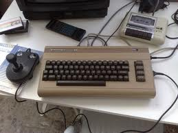
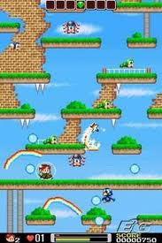
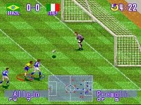
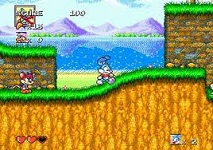
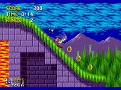
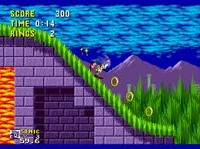

Recent Games I've Played
Clash of Clans (Android)
Vector (Android)
Colorful Dream (Android)
Piano Tiles (Android)
Unblock Me (Android)
Smash Hit (Android)
2048 (Android)
Call of Duty Ghosts
The Wolf Among Us
Fifa 14
Battlefield 4
Axel & Pixel
Rayman Legends
Dota 2
Metal Gear Rising Revengeance
Scribblenauts Unlimited
Splinter Cell Double Agent
Rayman Origins
Tomb Raider
brothers in arms Hells highway
Runner 2 Future Legend of Rythm Alien
Outland
Castle Crasher
Crysis 3
Forza Horizon
Fifa 13
Bionic Commando Rearmed
Call of Duty Black Ops 2
Pro Evolution Soccer 2013
Halo 3 ODST
Forza 4
Fifa 12
Torchlight 2
Slender
The Elder Scrolls V Skyrim
Max Payne 3
Pure
Call of Duty Modern Warfare 3
Start of 2012
Chronicle
When I was 5, when my father bought me a commodore 64. After that video games became my dreamy world.
|  |  |
30 Years after Commodore!
I'm really shocked how the consoles were in 3rd and 4th generations of consoles. Great Times!
Sega Mega Drive was my second console. Tiny Toon, Sonic, Street of Rage II, Mortal Kombat 3, and International Superstar Soccer Deluxe.
I'm interested in how many times I've played these fanastic games.
Really enjoying, fascinating design, and without mentionable bugs. Thanks Sega, Konami and other companies.
   
